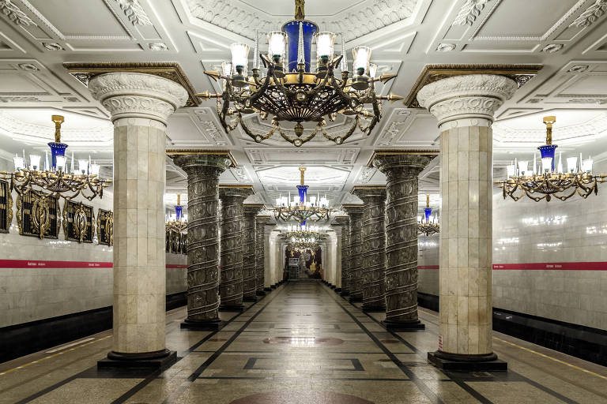
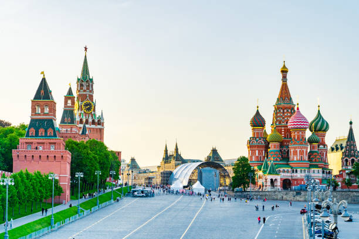
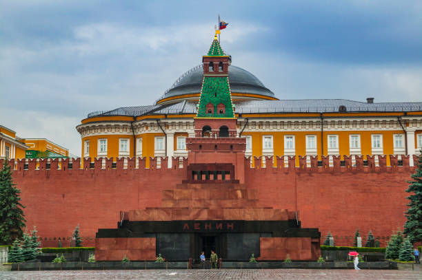
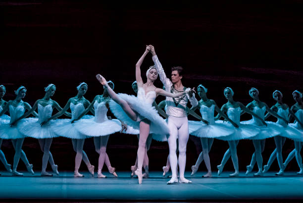
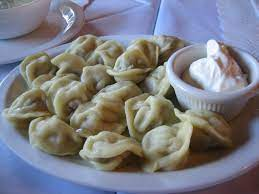
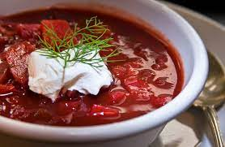
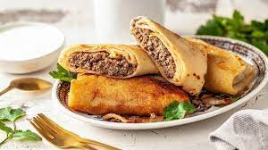
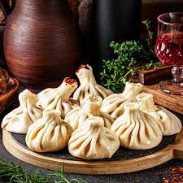

Russia

Conhecida pela sua imensidão territorial, pela vodka e pelo frio, a Rússia vem aumentando o turismo de forma rápida após o período soviético. Um país que faz parte da Ásia e da Europa ao mesmo tempo e tem fronteira marítima com o Japão e com o Alasca… acredite, você se encantará a cada metro quadrado.
São palácios gigantescos, jardins imensos, catedrais belíssimas, bons restaurantes e espaços culturais de referência. A Rússia mexe com o nosso imaginário com sua mistura de clássico com exótico. Sua capital, Moscou, é uma cidade grande, moderna, cosmopolita, rica em cultura, história e ostentação.
Algumas pessoas acreditam que o país é frio e perigoso pela dificuldade do alfabeto e da cultura, mas você pode se surpreender. As cidades são bem cuidadas, com transporte eficiente, atrações interessantes e pessoas atenciosas.
Tudo isso faz com que a Rússia seja um dos países mais visitados do mundo com lugares incríveis para conhecer. Anima em conhecer?
Informações e Estatisticas
- Capital: Moscou
- Moeda: Rublo Russo
- Idioma: Língua Russa
- População: 144,3 milhões
- Requer Visto: Não
- Requer Vacinas: Não
- Eletricidade: 220 V
- Código telefônico: +7
- IDH: 0,804 (49º)
Pricipais atrações
- Pegar o metrô de Moscou 
- Andar pela Praça Vermelha 
- Visitar o Mausoléu de Lênin 
- Apreciar um espetáculo no Teatro Bolshoi 
- Passear de barco pelos canais de São Petersburgo
- Conhecer o Museu da Vodka
- Apreciar a arquitetura de Moscou
- Assistir o desfile da troca da guarda no Monumento ao Soldado Desconhecido
- Realizar o cruzeiro noturno pelo rio Moscou
- Explorar o Bunker 42
Pratos Tipicos
Apesar de estar aberta para a cultura ocidental, a culinária russa é muito influenciada regionalmente, mantendo a tradição com seus pratos típicos, forte em carboidratos e ensopados. O nosso famoso estrogonofe veio de lá. Nós o 'abrasileiramos' com o arroz, mas tradicionalmente o prato é servido acompanhado de purê de batatas ou batata assada e frita.- Pelmeni : Um dos pratos mais tradicionais da Rússia é uma espécie de ravióli recheado com carne e creme de leite fresco. 
- Borscht : Sopa típica a base de beterraba com batata e carne. Servida quente com creme de leite russo para acompanhar 
- Bliní : As panquecas russas são muito famosas, sua massa é feita de leite, açúcar, gemas, manteiga e sal. Com diversos acompanhamentos, os mais famosos são caviar, smetana (creme de leite russo) e geleia. 
- Khinkali : Pastel feito a base de farinha de trigo, ovos, sal e água. Ele é cozido e recheado com carne ou cogumelo. 
- Frango à Kiev : Um dos pratos mais famosos da Rússia, feito com peito de frango recheado com manteiga e ervas finas. Pode ser servido empanado, frito ou assado.